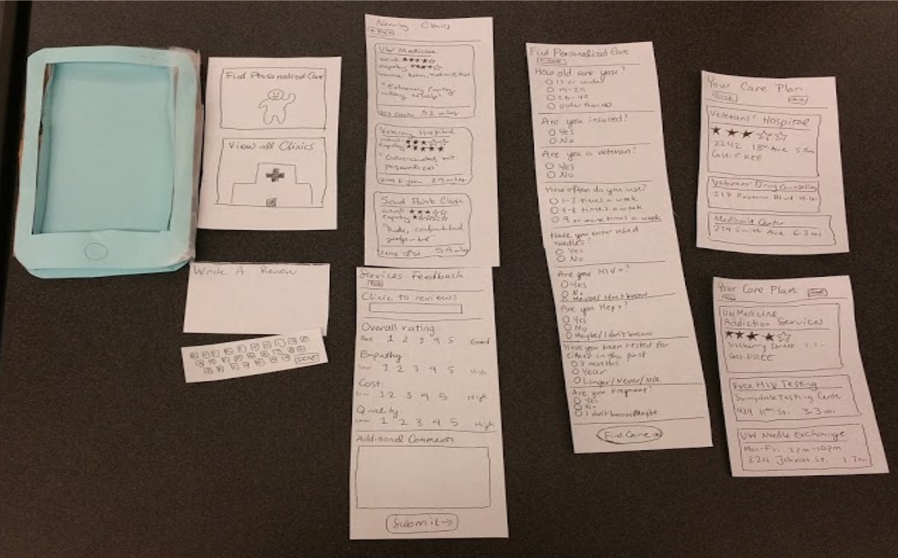

Initial Paper Prototype

Heuristic Evaluation
The heuristic evaluations gave us the feedback necessary to properly understand some of the more basic difficulties with our initial paper prototype. Some examples are as follows:
- Difficult to navigate back to home screen
- Had trouble remembering key information when came time to review
- Had no confirmation of review submission
- Certain questions were ambiguous
User Tests
Our user tests gave us feedback that touched nearly every part of the system. However, perhaps the biggest change resulting from the user tests was the overal simplification of the reviewing notion. Rather than having users initiate reviews and then find their clinic we now have them go the other direction (choose clinic, then review). While this may seem trivial, our user tests indicated this was a large improvement in the usability. Other key feedback was as follows:
- Buttons too small
- Certain questions irrelevant
- Navigation not completely consistent